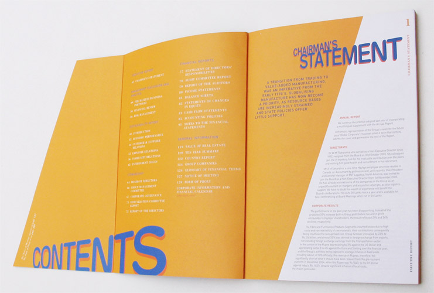

|
hayleys pvt. ltd., sri lanka, is a holdings company that has grown from a small proprietorship into a multinational conglomerate with businesses in manufacturing, agriculture, transportation and leisure, among others. arati designed their annual report in 2006. www.hayleys.com |


cover and back reflecting the theme ‘beyond borders’
back, cover and flap
inside cover and flap

section opener
detail of diagrams
sub section
section opener